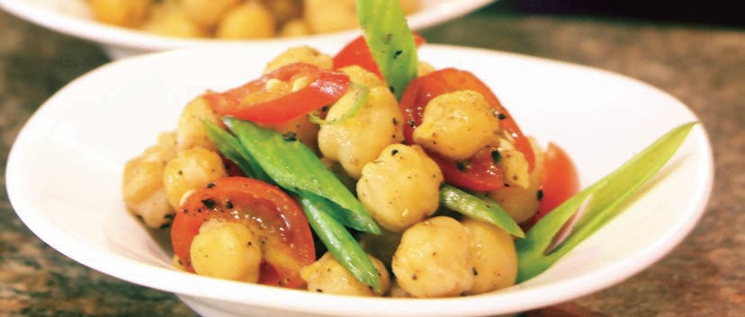
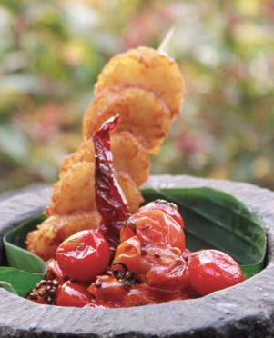
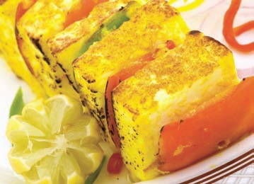

|
|
CHANA CHAAT
 |
INGREDIENTS
100 gm Chana (white chickpeas)
1 Onion, chopped
20 gm Chopped tomatoes
20 gm Coriander leaves, chopped
5 gm Ginger, grated
10 gm Green chillies, chopped
5 gm Red chilli powder
5 gm Dried mango powder
3 gm Cumin powder
5 gm Chaat masala
3 ml Lemon juice
5 gm Baking soda
Salt to taste/black salt to taste
METHOD
Soak chana overnight in a bowl with baking soda
and salt.Wash it thoroughly. Microwave on LOW till
it is soft and tender. Drain. Cool it in the refrigerator.
In a large bowl, take the chana. Add chopped
tomatoes, onions and green chillies. Add all the dry
spice powders and black salt. Mix well. Add lemon
juice to the chaat. Garnish with coriander leaves and
spring onion. |
|
|
TOMATO CHUTNEY
 |
INGREDIENTS
200 gm Tomatoes
50 gm Chopped onions
10 gm Green chillies, chopped
3 gm Chana Dal
3 gm Urad Dal
3 gm Curry leaves
4 gm Turmeric powder
5 gm Red chilli powder
2 Whole green chillies
15 ml Refined oil
Salt to taste
METHOD
In a bowl, pour oil. Add the dals
and curry leaves. Microwave on
LOW for 3 minutes. Remove.
Add onions. Microwave for
another 3 minutes till they turn
translucent. Add the chopped
tomatoes, green chillies,
turmeric powder and salt.
Microwave for 2 more minutes.
Allow to cool completely. Purée
the mixture for a few seconds in
a blender to get coarse, chunky
chutney. |
Tip: Food continues to cook when removed from the microwave, by the heat
generated within it. So always take into account standing time. Large or dense
vegetables and fruit need standing time rather than more microwave time. |
PANEER TIKKA
 |
INGREDIENTS
500 gm Paneer chunks, cut into 2"
FOR MARINADE
250 gm Hung curd
1 tbsp Dry fenugreek leaves (kasuri methi)
1 tsp Cumin powder
1 tsp Coriander powder
1 tbsp Chilli powder
1 tsp Garam masala powder
1 tsp Turmeric powder
1-2 tsp Salt
FOR SKEWERS
1 Capsicum, cut into 2" dice
2 Tomatoes, cut and halved,
seeds removed
1 tsp Oil
2 tbsp Butter, melted
1 tsp Chaat masala
METHOD
Mix paneer with turmeric, dry fenugreek leaves,
cumin powder, coriander powder and salt. Marinate
in the refrigerator for 2 hours. Mix the batter
ingredients, and dunk the
paneer in the marinade paste.
Arrange the paneer on skewers
along with capsicum and
tomatoes. Preheat the crusty
plate. Drizzle oil on the crusty
plate. GRILL for 10 minutes.
Turn to ensure even browning.
Garnish with butter (melt for 20
seconds in MWO on HIGH) and
sprinkle chaat masala. |
Tip: Choose a microwave container slightly larger than the dish required for
cooking the recipe in a conventional oven. Make sure your container is labelled
for microwave use. |

|
|
.jpg)